Artist
Park Gyeongin
박 경 인
박경인 작가는 화려한 색채와 대비되는 무심하고 건조한 인물의 표정을 통해
현대인의 소외와 공허함을 포착한다는 평을 받습니다.
평론가들은 특히 인물의 텅 빈 눈빛과 냉소적인 태도가 동시대의 불안과 욕망을
투영하는 거울과 같다고 해석하며, 감각적인 붓터치로 인물의 미묘한 심리를
탁월하게 묘사한다고 평가합니다.
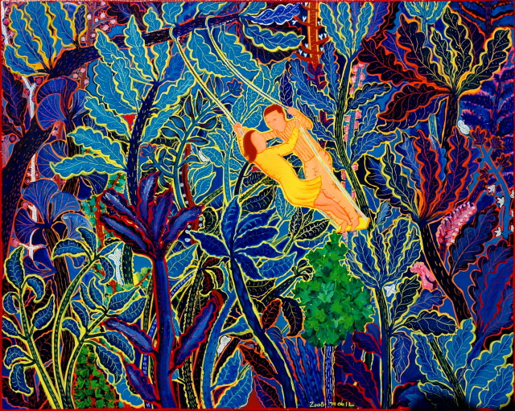
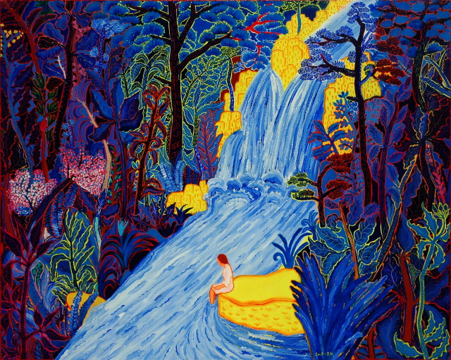
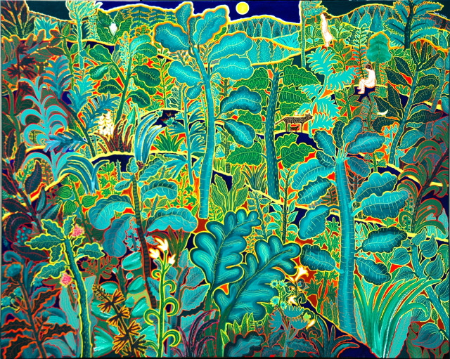
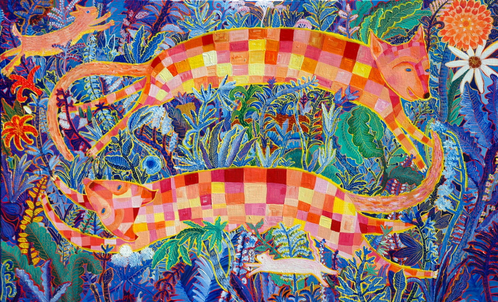
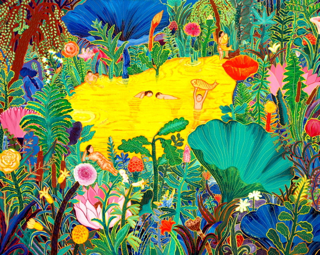
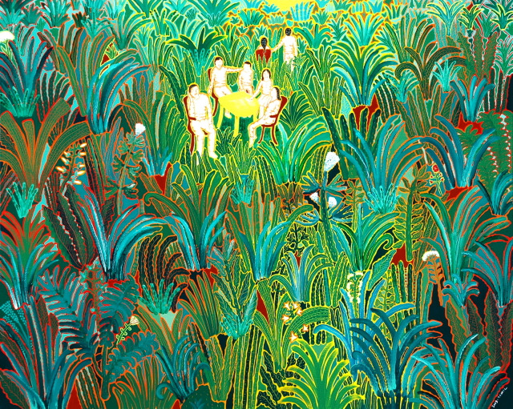
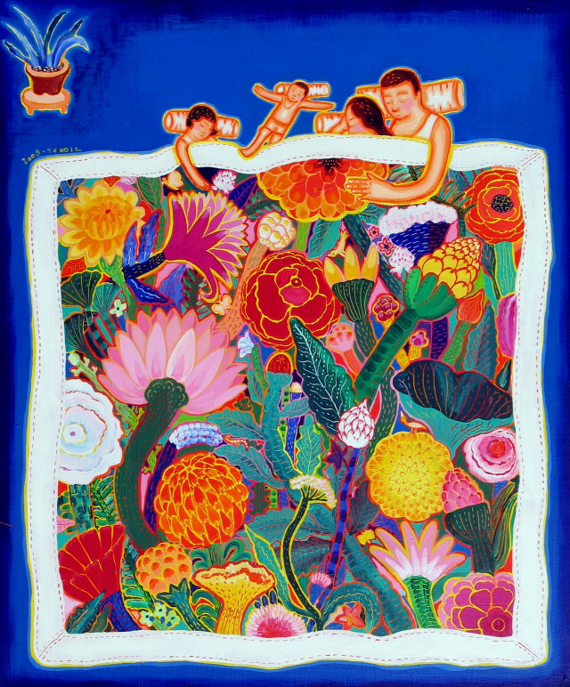
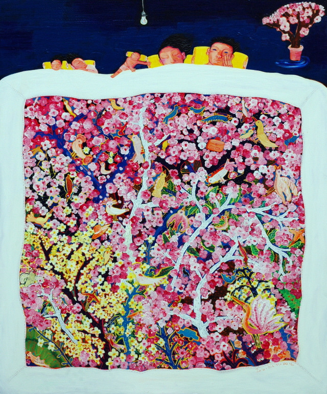
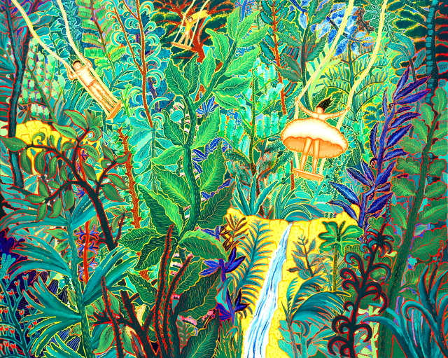
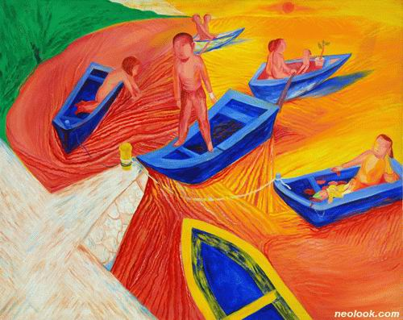
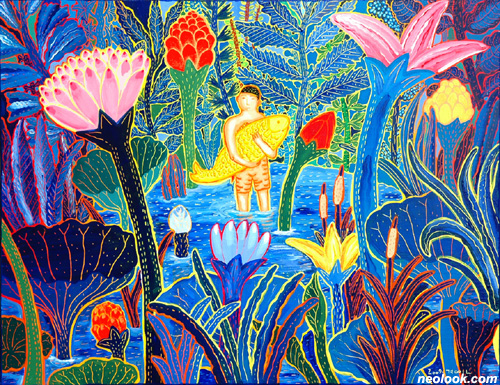
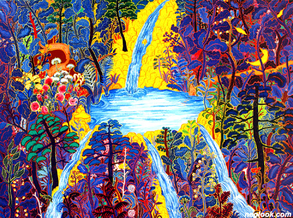
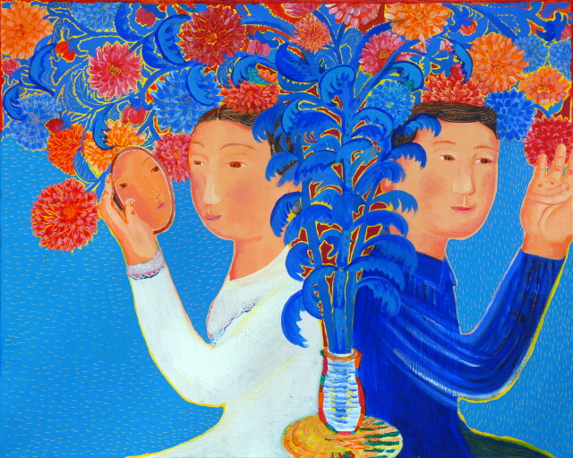
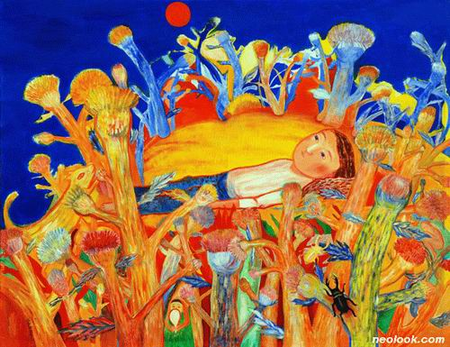
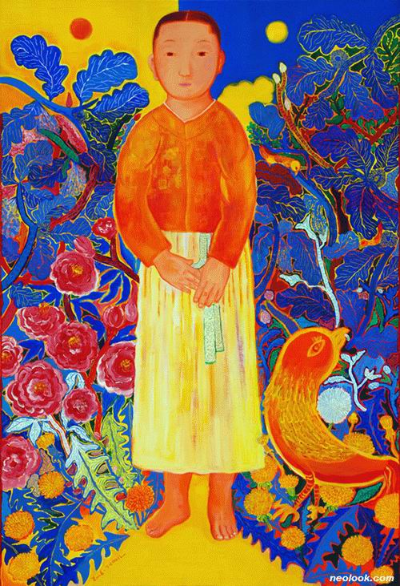
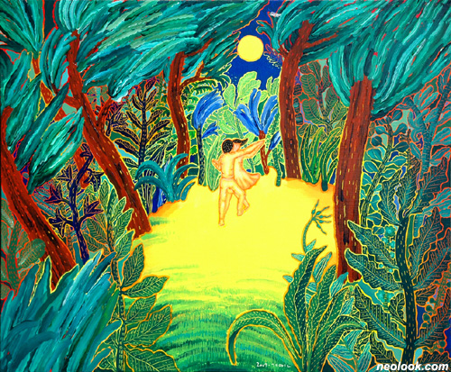
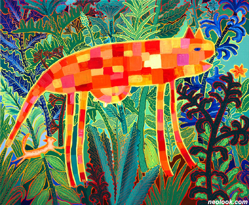

Beyond the Wall of Silence, Meeting Your Gaze
침묵의 담장을 넘어, 너의 시선을 마주하다
박경인의 그림 앞에 서면 인물이 커다란 눈망울로 나를 응시하고 있다. 그것은 단순한 시선의 교환이 아니다. 그림 속 인물의 눈은 도시의 소음을 뚫고 조용한 안식처로 이끄는 심리적 거울이다. 인물들은 대체로 성별의 경계가 모호한 중성적 존재로, 보는 이의 내면을 투명하게 꿰뚫는 불편한 투명성을 지닌다.
눈이 과잉된 감정을 담고 있다면, 입은 철저한 절제를 보여준다. 말해야 할 것들이 말해지지 못한 채 응축된 침묵—그것이 박경인 인물화의 심리적 긴장을 만드는 근원이다. 화면 위 밝고 경쾌한 파스텔 색채는 이 멜랑콜리를 역설적으로 감싸는 포장지다. 화사한 껍데기 아래 더 깊은 공허가 있다.
배경이 제거된 인물들은 공간으로부터 고립되어 있다. 초연결 시대의 역설적 단절—그것이 작가가 포착하려는 현대적 자아의 초상이다. 그러나 박경인의 작품이 궁극적으로 건네는 것은 절망이 아니라, 공유된 취약함을 통한 조용한 위안이다.
경남 사천 출생
부산대학교 예술대학 회화과(서양화 전공) 졸업
경기도 양평군 양동면 고송리 912-1 거주
Solo Exhibitions
- 2011 Gallery Space Tong, 서울
- 2009 Gallery Root, 서울
- 2007 맑은물미술관, 경기
- 2007 Topohouse Gallery, 서울
- 1992 금호미술관, 서울
Group Exhibitions
- 2013 국제교류전 (베이징·베를린)
- 2010 환경미술제
- 1988~ 40여 회 단체전 참가
Collections
- 국립현대미술관 미술은행
- 금호미술관
- 부산시립미술관
- 경기도미술관